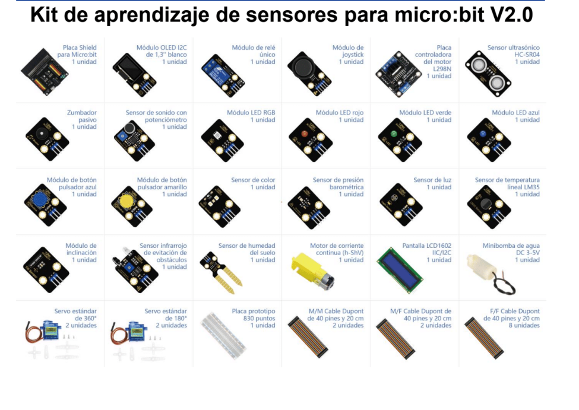

Busca el componente real
Usa la fotografía del kit para reconocer el módulo y comprobar su etiqueta.
Aprende con los equipos de los que disponemos: el kit ACEBOTT TA647 para micro:bit V2 y el robot Maqueen Plus. Fotografías reales, inventario, conexiones orientativas y retos que puedes llevar al taller.


26 componentes con fichas y retos, fotografías reales y conexiones para realizar las primeras prácticas con sensores, pantallas, pulsadores y actuadores.
Ver piezas →16 misiones progresivas de motores, siguelíneas, ultrasonidos, radio, luces y rescate. Enlaces a programas de referencia de DFRobot.
Entrar a la ruta →Usa la fotografía del kit para reconocer el módulo y comprobar su etiqueta.
Consulta la guía de la Shield con 26 esquemas, tablas de pines y precauciones.
Sigue los pasos, resuelve el reto inicial y completa los niveles plata y PRO.
Seguridad: la fotografía identifica componentes, pero no sustituye al esquema eléctrico. El tutorial enlazado de ACEBOTT no estuvo accesible para verificar todos los pinouts; antes de alimentar módulos de 5 V, motores, bomba o relé, confirma tensiones y conectores en el manual físico.